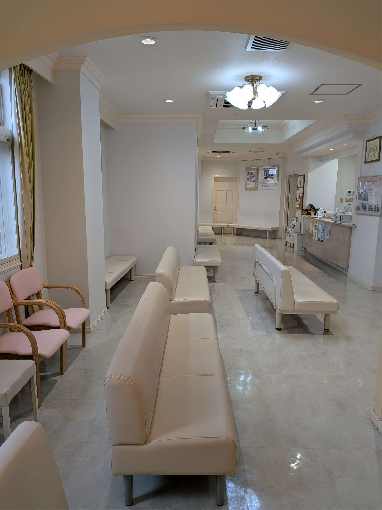
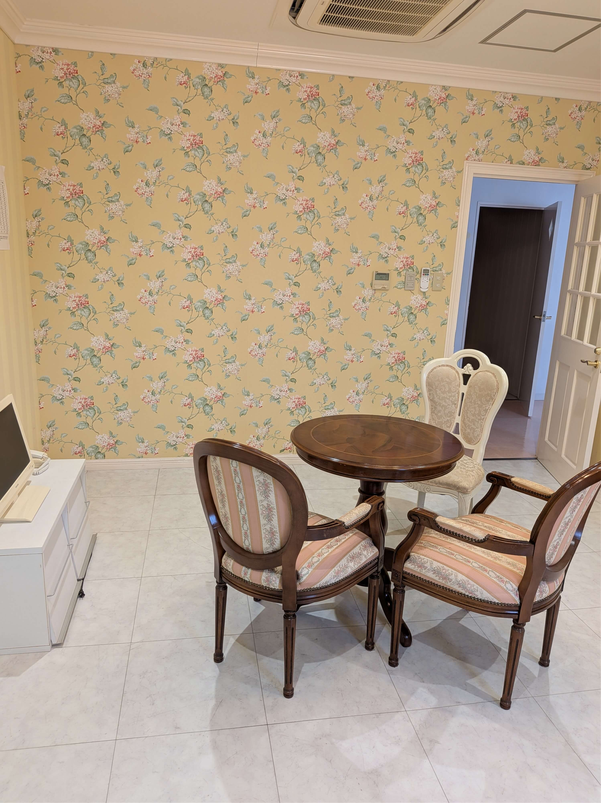
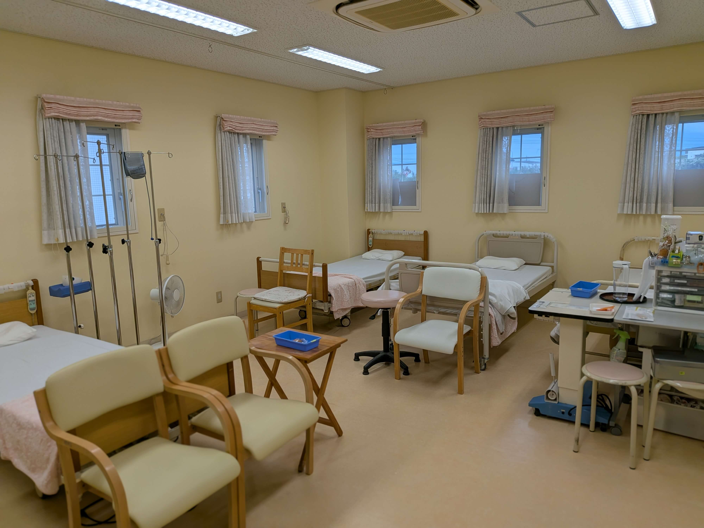
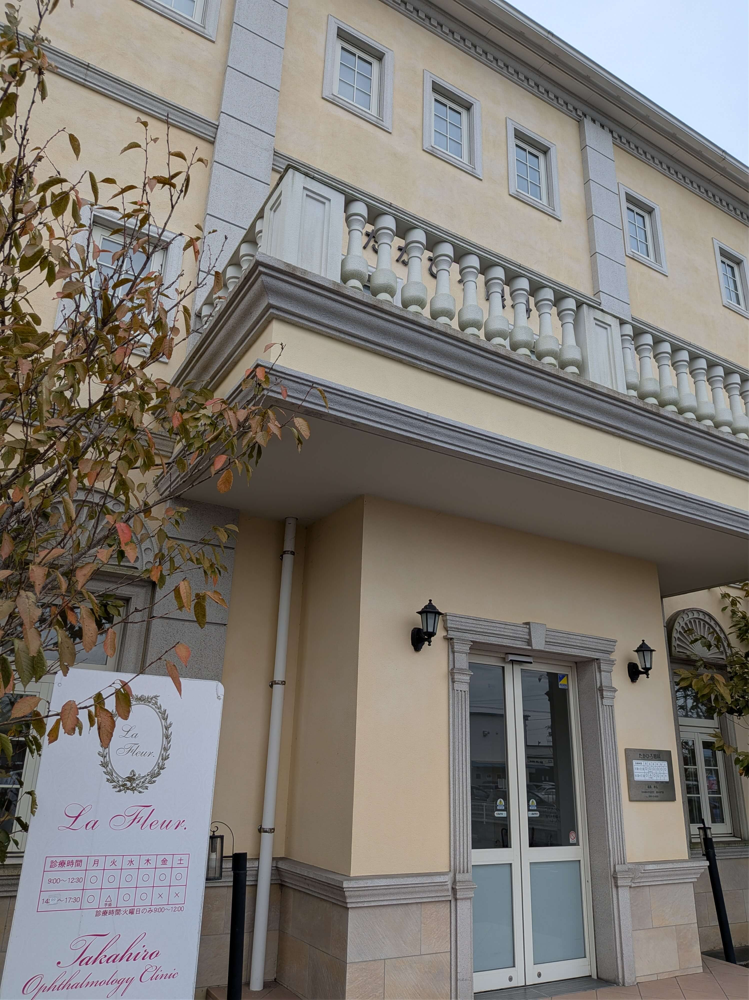

一人の医師がすべての治療を担うのではなく、神経眼科・網膜疾患・涙道・眼瞼など各領域に精通した医師を大学病院や専門病院から招聘し、専門性の高い診療を行っています。
「自分や自分の家族が手術を受ける際に、心から信頼できる術者に委ねたい」という想いを原点に、適切な術前検査と負担の少ない丁寧な日帰り手術を追求しています。
鹿児島大学病院や地域の基幹病院とのネットワークを活かし、より高度な検査や入院加療が必要な際も、専門外来へ迅速におつなぎできる連携体制を整えています。
患者さまが診察や手術の前後を緊張せずリラックスしてお過ごしいただけるよう、温かみのある空間づくりとバリアフリー設備を整えております。

シャンデリアや柔らかな照明が心地よい、ゆったりとお待ちいただける空間です。

手術前のご相談やご説明も、周囲を気にせず落ち着いてお話しいただけます。

手術の前後にリクライニングチェアやベッドでゆっくりお休みいただけます。

お車でも安心してご来院いただけるよう、広い無料駐車場をご用意しています。
濁った水晶体を取り除き、人工の眼内レンズを挿入する手術です。患者さまの生活スタイルに合わせて単焦点レンズ（保険適用）および多焦点レンズ（選定療養）をお選びいただけます。
まぶたが下がって視界が狭くなったり、肩こりや頭痛の原因にもなる眼瞼下垂に対する手術です。機能面の改善を重視し、丁寧な診察のうえで治療方針をご案内します。
眼の詳しいデータ測定や血液検査を行います。安全確認のため必要に応じて内科受診をお願いする場合があります。白内障の場合はレンズの種類を選択します。
抗不安薬の静脈注射等で緊張を和らげ、負担を抑えて手術を行います。回復室でゆっくりお休みいただいた後、ご帰宅いただきます。（※遠方の方は近隣ホテル泊での対応も可能です）
翌朝にご来院いただき、眼帯を外して術後の経過を確認します。眼の状態に問題がなければ、日常生活の制限を段階的に解除していきます。
| 診療時間 | 月 | 火 | 水 | 木 | 金 | 土 | 日・祝 |
|---|---|---|---|---|---|---|---|
| 午前 9:00〜12:30 | ● | ▲ 〜12:00 |
● | ● | ● | ● | ／ |
| 午後 14:00〜17:30 | ● | 手術 | ● | ● | ／ | ／ | ／ |
※火曜午前は12:00まで、火曜午後は手術専用となります（金・土曜も不定期で手術を実施）。
※休診日：日曜・祝日、金曜・土曜午後。
※お支払いについて：クレジットカードでのお支払いは対応しておりません（現金のみ）。